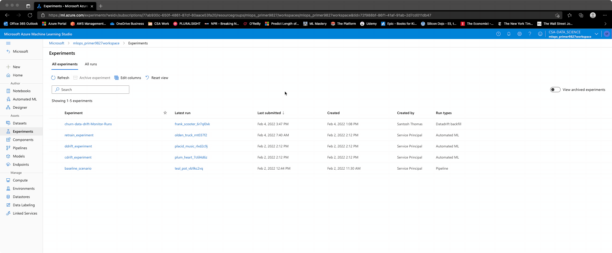
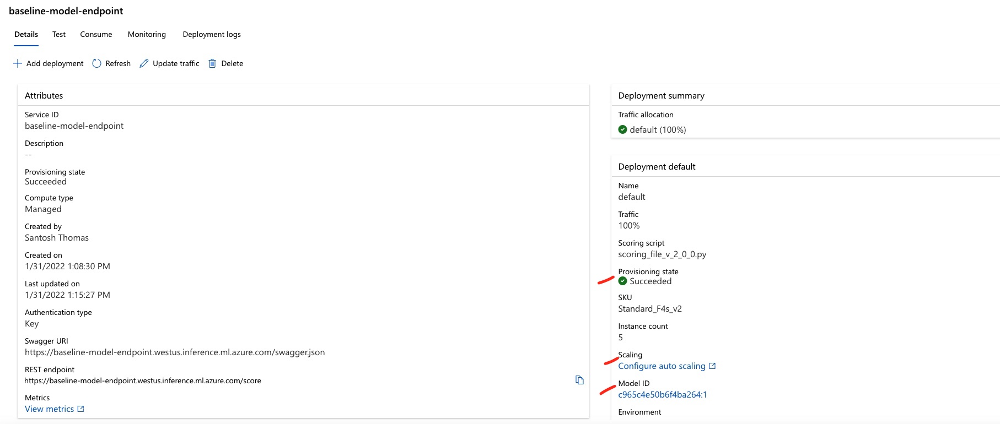

Model Deployment
Contents
Model Deployment¶
PFS Corporation requires a real-time endpoint to profile new customers as they come in. This provides the marketing/GTM team an opportunity to assess if there are ways to ensure these customers are more successful, and retain better. They are aware of multiple methods to deploy a model (a local deployment, through Azure ML clusters, with Azure Kubernetes Service (AKS), managed endpoints and ACI. All require a model, an environment with the relevant dependencies, a scoring script (to run the model and infer a prediction) and a deployment configuration.
Given the need to move fast and manage as minimal infrastucture as possible, they are interested in leveraging the managed online endpoint.
The easiest approach once a model has been selected is to walk through the wizard option in the studio to deploy a real-time endpoint. Since this flows from the model being evaluated, the scoring script and the dependencies are already part of the model’s outputs and will default as part of the endpoint deployment. More details are in the sample below: 
Once deployed, a live endpoint (baseline-model-endpoint) is available to receive data inputs and provide a prediction. Note that with
this endpoint, many options are configurable - in particular, auto-scaling to accomodate traffic bursts,
either based upon a manual limit, or a set of metrics.

Predicting using the test data¶
Authenticating through this endpoint, a script can be easily run to provide predictions. Given the model was
built off an 90/10 split of train/test data, we can push the test data through the API to yield predictions.
This yields a ~80% accuracy by the chosen performance metric. This is reasonably good, compared to the
~84% accuracy on the training set. Note that the trained model preserves the logic for any data
transformations as part of its processing so raw original inputs can be fed into the endpoint.